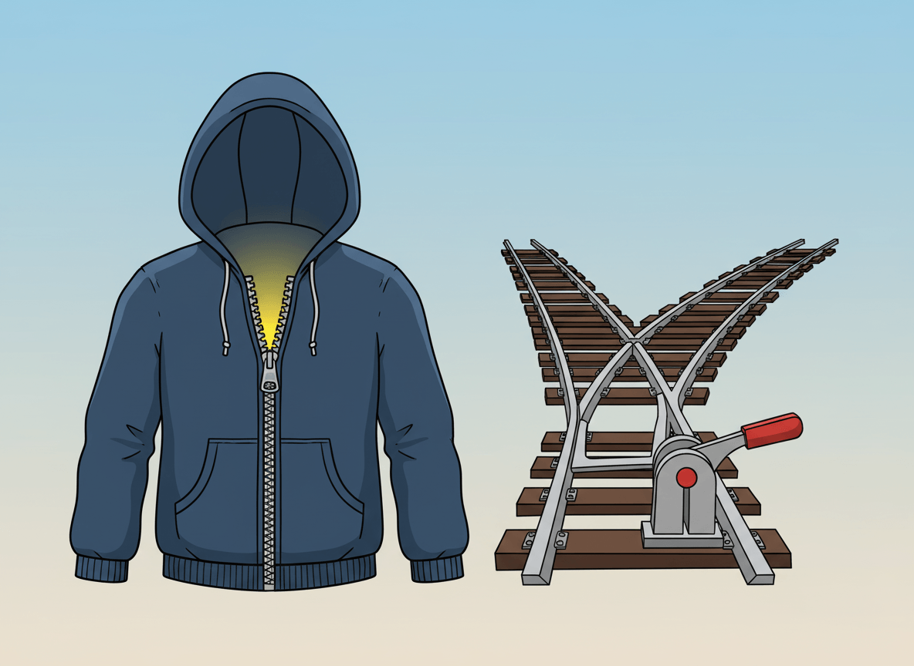

Software Seam
Michael Feathers coined the term "seam" in the context of legacy code. His definition is short, but it can feel abstract on first read:
"A seam is a place where you can alter behavior in your program without editing in that place."
In simpler words:
- a seam is a safe switching point
- it lets you change what happens next
- it does that without rewriting the whole area around it
That is why seams matter so much in refactoring. When code is hard to change, a seam gives you one controlled place where you can introduce a new path.
A Real-Life Analogy
Think about a jacket with a zipper.
The zipper is not the jacket itself. It is the place where you can open, close, or replace how the two sides connect without cutting the whole jacket apart.
Software seams work in a similar way:
- the jacket is the existing codebase
- the zipper is the seam
- opening or redirecting the zipper is how you change behavior safely
Another analogy for this Monopoly project is a railway switch. The tracks already exist, but one small switch decides which direction the train takes. A seam is that switch.

2. Railway switch: track is a codebase, switch is a seam
Why Feathers Cares About Seams
Feathers' main problem was legacy code: code that is risky to change because you do not yet have safe feedback. Often the code is tightly connected to too many things at once:
- global functions
- external systems
- hard-coded dependencies
- long call chains
- state spread across many files
If you change everything at once, you do not know what broke.
A seam solves that by giving you one narrow insertion point. Once you have that point, you can:
- break a dependency for tests
- redirect a call to new code
- add observability
- refactor in smaller steps
Martin Fowler adds another useful term: the enabling point. That is the place where you choose which behavior to use.
So there are really two parts:
- the seam: the place where behavior can vary
- the enabling point: the place where you choose the old path or the new path
The Simplest Way to Recognize a Seam
Ask this question:
"Can I make this code behave differently without rewriting the code right here?"
If the answer is yes, you probably found a seam.
Examples:
- pass a different function as an argument
- call through a wrapper object instead of directly calling a dependency
- move shared state into one object and let callers use that object
- introduce a helper method that delegates to existing code for now
A Seam in This Monopoly Project
This project used to have game state spread across separate values:
playersboardrollDice- turn flow logic inside
playRound() - player movement in
movePlayer()
Earlier style:
const board = createBoard();
let players = createPlayers(["Luke Skywalker", "Darth Vader"]);
showIntro(players);
for (let turn = 0; turn < 10; turn++) {
playRound(players, board);
}
showSummary(players);That older style worked, but it spread game state across multiple arguments and multiple files. If you wanted to change turn order, current-player tracking, or active-player rules, you had to touch several places at once.
The refactor introduced a safer seam:
const game = createGame(["Luke Skywalker", "Darth Vader"]);
showIntro(game.players);
for (let turn = 0; turn < 10; turn++) {
playRound(game);
}
showSummary(game.players);That game object is now the seam used by the current codebase.
Why?
- it centralizes state in one object
- it gives
movePlayer()andplayRound()one stable entry point - it lets you add behavior like
currentPlayer()andnextActivePlayer()without rewriting every caller immediately
Before And After: Why This Is a Seam
Before the refactor, movement depended on several separate arguments:
movePlayer(player, steps, board, players);After the refactor, the call became:
movePlayer(game, steps);That is not just parameter shuffling.
It creates a seam because movePlayer() no longer needs the caller to assemble every piece of state manually. The caller passes one object, and that object decides who the current player is:
const player = game.currentPlayer();Now the enabling point moves upward. Instead of every caller deciding how to find the active player, the game object owns that decision.
This is the key simplification:
- before: many callers know too much
- after: one seam hides that decision behind
game
Why This Refactor Is Safe
The attached refactoring note describes the intended sequence, and the implemented commits follow the same spirit.
The sequence is:
- introduce a new seam
- prove it with focused tests
- migrate one caller at a time
- run the smallest useful test slice
- run the full suite last
This is classic safe refactoring.
The important part is not "introduce a big new design". The important part is "create one new place where change can happen safely".
In this project, that means:
- create
createGame(playerNames) - verify the game object shape in isolation
- move
movePlayer()tomovePlayer(game, steps) - move
playRound()toplayRound(game) - update
index.js - migrate
locationRulesthrough a temporary adapter seam until the finalhandle(game)API is safe to keep
That is exactly what "change one seam at a time" means.
Code Sample Adapted To This Project
Here is a small example of how a seam helps you change behavior in one place instead of many places.
Without the seam
export function playRound(players, board) {
for (const player of players) {
if (player.isBankrupt) {
continue;
}
executePlayerTurn(player, board, players);
}
}This version works, but turn selection is mixed directly into round execution.
With the seam
export function createGame(playerNames) {
const players = createPlayers(playerNames);
const game = {
currentPlayerId: null,
players,
board: createBoard(),
rollDice,
currentPlayer() {
return this.players.find((player) => player.id === this.currentPlayerId) ?? null;
},
getActivePlayers() {
return this.players.filter((player) => !player.isBankrupt);
},
countActivePlayers() {
return this.getActivePlayers().length;
},
nextActivePlayer() {
if (this.players.length === 0) {
this.currentPlayerId = null;
return false;
}
const activePlayers = this.getActivePlayers();
if (activePlayers.length === 0) {
this.currentPlayerId = null;
return false;
}
if (this.currentPlayerId === null) {
this.currentPlayerId = activePlayers[0].id;
return true;
}
const currentIndex = activePlayers.findIndex(
(player) => player.id === this.currentPlayerId,
);
if (currentIndex === -1) {
this.currentPlayerId = activePlayers[0].id;
return true;
}
const nextIndex = (currentIndex + 1) % activePlayers.length;
this.currentPlayerId = activePlayers[nextIndex].id;
return true;
},
};
return game;
}Then playRound() can depend on that seam:
export function playRound(game) {
const turnsToPlay = game.countActivePlayers();
if (turnsToPlay === 0) {
game.currentPlayerId = null;
return;
}
game.currentPlayerId = null;
for (let turn = 0; turn < turnsToPlay; turn++) {
if (!game.nextActivePlayer()) {
return;
}
executePlayerTurn(game);
}
}This design is easier to test because state and turn navigation now live behind one object.
A Second Seam: The Temporary Adapter
Module locationRules exports object locationRules that has handle(game) method. Function handle() manages all location-based Monopoly rules, e.g., rent collection, property purchases. It depends on the game seam to get the current player and board state.
The final codebase also shows a smaller seam inside the migration.
The location rules originally needed separate values such as:
playersboardtilecurrentPlayer
The safe migration path was:
- keep the old behavior available
- add a game-based wrapper
- migrate tests to the game fixture
- collapse everything to the final
handle(game)API
That temporary adapter seam is useful to study because it shows that a seam does not need to be permanent. Sometimes the safest move is to add a short-lived bridge and remove it once the new call path is stable.
What Makes This Better For Tests
A seam is valuable when it reduces setup noise.
Without the seam, a test often has to build and coordinate several values:
const board = createBoard();
const players = createPlayers(["Luke", "Leia"]);
const player = players[0];
movePlayer(player, 2, board, players);With the seam, the test can express intent more directly:
const game = createGame(["Luke", "Leia"]);
game.currentPlayerId = game.players[0].id;
movePlayer(game, 2);That is simpler because the test now focuses on the behavior under test, not on passing around every internal dependency.
A Good Mental Model
Do not think of a seam as "yet another abstraction".
Think of it as:
- a controlled join
- a safe switch
- a place to redirect behavior
If an abstraction does not help you change behavior safely, it may still be useful, but it is not a very good seam.
Common Misunderstanding
People sometimes hear "introduce a seam" and think it means a huge rewrite.
Usually it means the opposite.
A seam should make the next change smaller.
In this Monopoly example, createGame() and the temporary locationRules adapter are not valuable because they are "more object-oriented". They are valuable because they let the refactor proceed in narrow, testable steps.
That is the heart of Feathers' idea.
Practical Rule Of Thumb
When code feels risky, do not start by redesigning everything.
Start by asking:
- Where can I introduce one small switching point?
- How can I prove that point with a focused test?
- Which caller can I migrate next without changing behavior?
If you can answer those three questions, you are already using seams well.
References
- Michael Feathers, "Testing Effectively with Legacy Code" (InformIT, Jan 21 2005), especially the section defining a seam and showing object seams: https://www.informit.com/articles/article.aspx?p=359417&seqNum=2
- Martin Fowler, "Legacy Seam" (Jan 4 2024), for the modern explanation of seams and enabling points: https://martinfowler.com/bliki/LegacySeam.html
- Nicolas Carlo, "The key points of Working Effectively with Legacy Code", for a simplified secondary summary of seams, tests, sprout, and wrap techniques: https://understandlegacycode.com/blog/key-points-of-working-effectively-with-legacy-code/
Closing Thought
A seam is not magic. It is just a carefully chosen place to make change smaller.
In this project, the implemented game object is a good seam because it moves state and turn decisions into one place, and that makes the rest of the refactor safer.